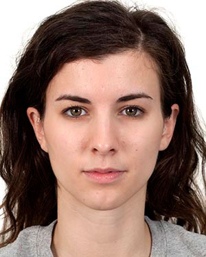
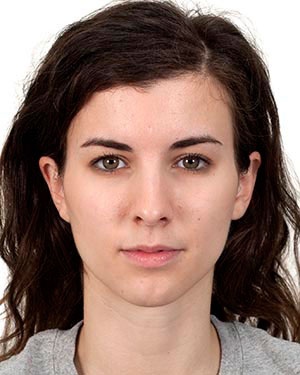

Task Instructions
On every trial you'll see five arrows (pointed left or right) paired with an image. For example:
 

You will have two tasks:
-
- Your first task is to indicate whether the center arrow is pointed left or right.
- You will use the keyboard to respond: Press "Z" if the arrow is pointed left or press "M", if the arrow is pointed right.
- Please respond as quickly and as accurately as possible